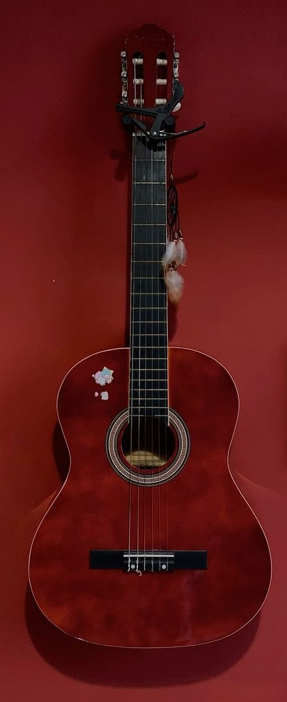
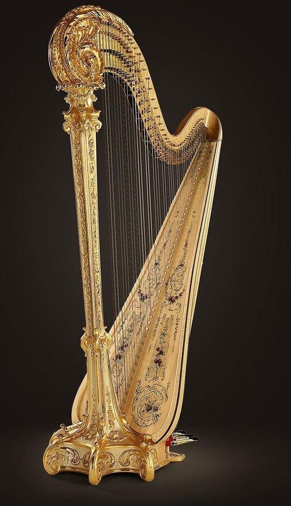
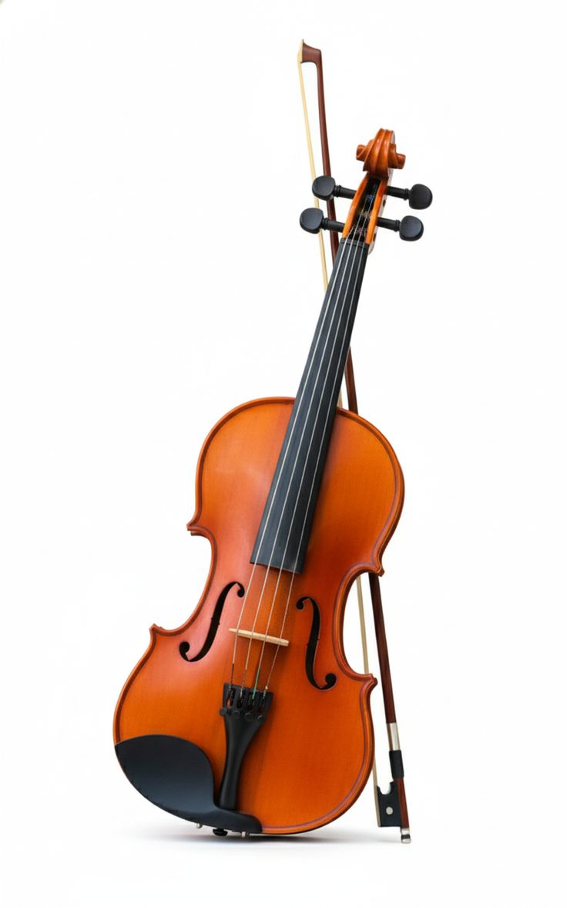
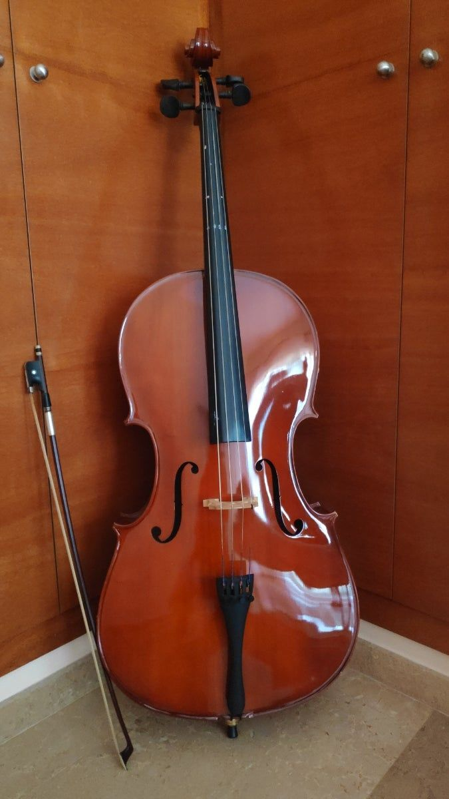
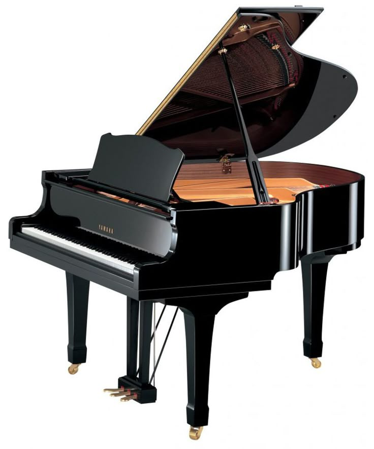

Types of String Instruments
PluckedThese are a subcategory of string instruments played by pulliing and releasing a string which the strings |
|
 |
GuitarThe modern guitar emergerd in Spain during the 16th century and it belongs to the lute family. The guitar evolved from the Spanish vihuela gaining it's signature look we know today. One interesting fact about the guitar is that before it gained exponetial popularity globally in the 1900's known as 'the poor man's piano' because it was an affordable alternative for commoners in 1800'. The key characteristics of a guitar include a hollow or solid frame depending on the type of guitar that amplifies sound. Guitars have a neck and fretboard which act as a pitch control by pressing down a string against a metal fret to play different chords and notes. It also acts a visual map for a player. It also has a bridge and nut which hold the strings in place.Another componet of the guitar is the tuning pegs used to tighten or lossen the strings to change pitch. The learning curve/difficulty is moderate a challenging start when looking at the mastery of basic chords and correct hand postures when playing. Once basics are mastered you can play popular songs relatively easy. Guitar ar available in multiple sizes from small to full-sized versions. |
 |
HarpThe harp one of the oldest instruments dating back to Acient Egypt around 3500 BEC. A fun fact about this plucked string instruments is that it is believed that it evolved form the hunting bow when people noticed the musical sound produced when the string was plucked prior to releasing an arrow and over time more strings of varying lengths were added creating the harp we know today. Characteristics of the harp include the frame which is a triangular wooden structure, the soundboard which ia a hollow body which amplifies the music, the string which are of different lengths, the pillar a post that supports the massive tension of strings and pedals used for pitch change. Harps come in different sizes front the small lap harps to large professional concert harps.The learning difficulty of a harp is moderate as it requires asymmetrical coordination because you must train your hands to play different rhythms on oppsite sides of the frame while using your feet on the pedals at the same time. |
BowedBowed string instruments are a subcategory of string instruments that are played by rubbing a bow |
|
 |
ViolinThe violin is a bowed instrument that originated in northen Italy around early 1500's. A fun fact about the violin is that when fast pieces of music are played the bow can move across the strings at speeds of around 40 to 50km/h and due to so much friction being created the strings can reach temperatures of over 150℃. The violin is the smalletst and high-pitched member of the bowed string category. Its defining characteristics include its curved bridge, which keeps the strings arched so the bow can move over each string. It has an internal feature called the sound postwhich transfers vibrations fromt the front to the back of the violin creating the signature bright sound violins are known for. The violin's learning difficulty is high as it is challenging for beginners to he the right intonation. Since the violin neck has no frets that earlier stated act as a navigation on the guitar, for the violin one has memorize exactly where to place their finger to stay in tune. Another callenge is learning a bowing technique in order to produce a clear sound. |
 |
CelloThe cello much like its smaller relative the violin it originated in Italy in the 16th century around the 1530's. A fun fact about it is that it started off much larger than what we see today and was played with a shoulder strap before it was refined and became a seated instruments. It evolved from basse de violon. Some of the defining features of the cello include it large hollow body designed to resonate sound at lower pitches, an endpin which is the support of the instrument that rests on the floor. The cello also carries the title of being a high difficulty learning curve.It is difficult to learn because much like its smaller counter part it has no frets for navigation and one must learn and memorize precise fingure placements to get the results they desire. One other feature that adds onto its difficulty is the size of the cello and the thickness of the strings which requires great strength and reach to play correctly. |
HammeredThese are string instruments played by striking strings with small mallets or hammers. |
|
 |
PianoThe piano is a type of hammered string instruments originating from Italy around the year 1700. The birth of the piano came about when instrumentalists desired for an instrument that changed volume depending on how hard you struck the string unlike the harpsichord that existed then. The piano was called gravicembalo col piano e forte meaning harpsichord with soft and loud. Characteristics of a piano include its hammer mechanism which is triggered by pressing keys to make hammers strike the strings. Another feature includes its frame in which the strings are contained and the pedal system which sustains notes even after they have been played. The learning difficulty lies between moderate and high since beginners will get clean sounds with no effort when a key is pressed. The high difficulty comes in when a player must be able to play two different rhythms with each hand at the exact same time. |
 |
Hammered dulcimerThe hammered dulcimer is believed to have originated in the Middle East around 900 A.D. The dulcimer was the go-to instrument for traveling musicians because of it's size and protability. The dulcimer defining features include it's trapezoid-shaped body with strings stretched across it. It is played by directly hitting the exposed strings with the small mallets. The dulcimer has a moderate learning difficulty this is because of its layout since the strings are arranged in bridges and a player must memorise the a zig-zag pattern in order to play a simple scale. |